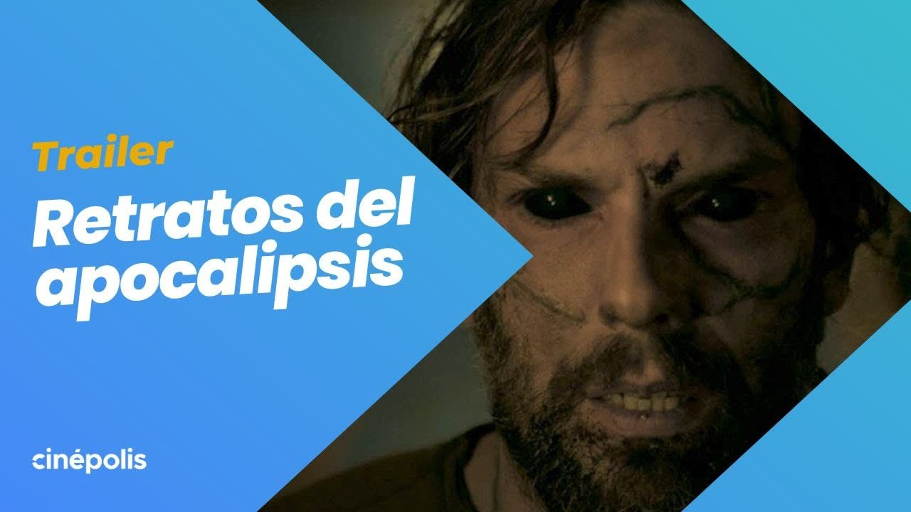

Retratos del Apocalipsis
Director / Editor
Largometraje de terror escrito, dirigido y producido por Luca Castello, junto a Fabián Forte y Nicanor Loreti. Seleccionado en Mórbido (México), Mar del Plata (Argentina), Fantaspoa (Brasil) y Curtas (España) entre otros. Ganó Mejor Película Internacional en el Medellín Horror Fest (Colombia). Reúne relatos apocalípticos marcados por el fanatismo, la violencia y lo sobrenatural. Actualmente en etapa de distribución internacional.
